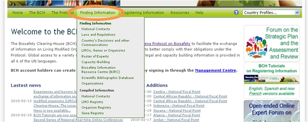
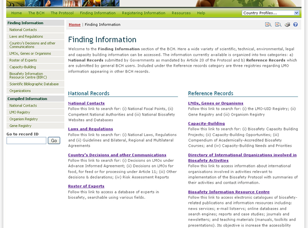

URL: http://bch.cbd.int/database/
Los enlaces a las categorías de información dentro de las bases de datos del Portal Central del CIISB se obtienen a través del menú desplegable de Búsqueda de Información, en la barra de navegación.

Cada categoría enumerada en esta página se enlaza con una página de búsqueda que ha sido diseñada para encontrar fácilmente información específica. En dicha página de búsqueda también es posible navegar en todas las entradas de la categoría, haciendo clic en el botón Examinar todos los registros.

En el Módulo 04 se describe en detalle el tipo de datos almacenados en las bases de datos del CIISB y las instrucciones para la búsqueda de información.
 Vea también
Vea también
MO04 Búsqueda de Información en el Portal Central del CIISB
Búsqueda de Información en el Portal Central del CIISB